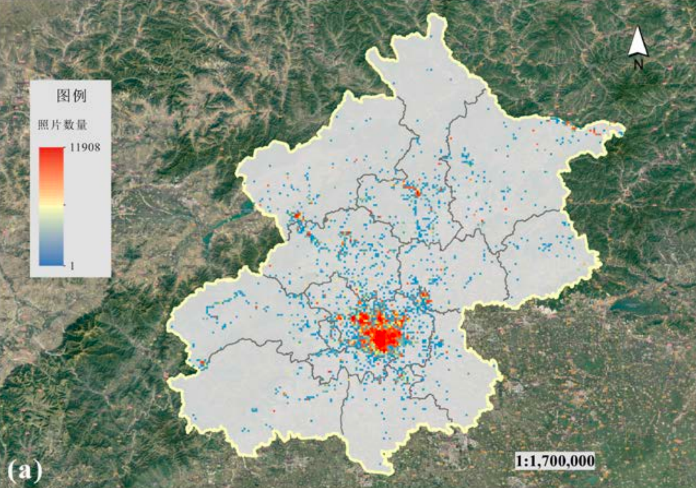
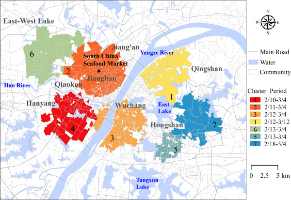
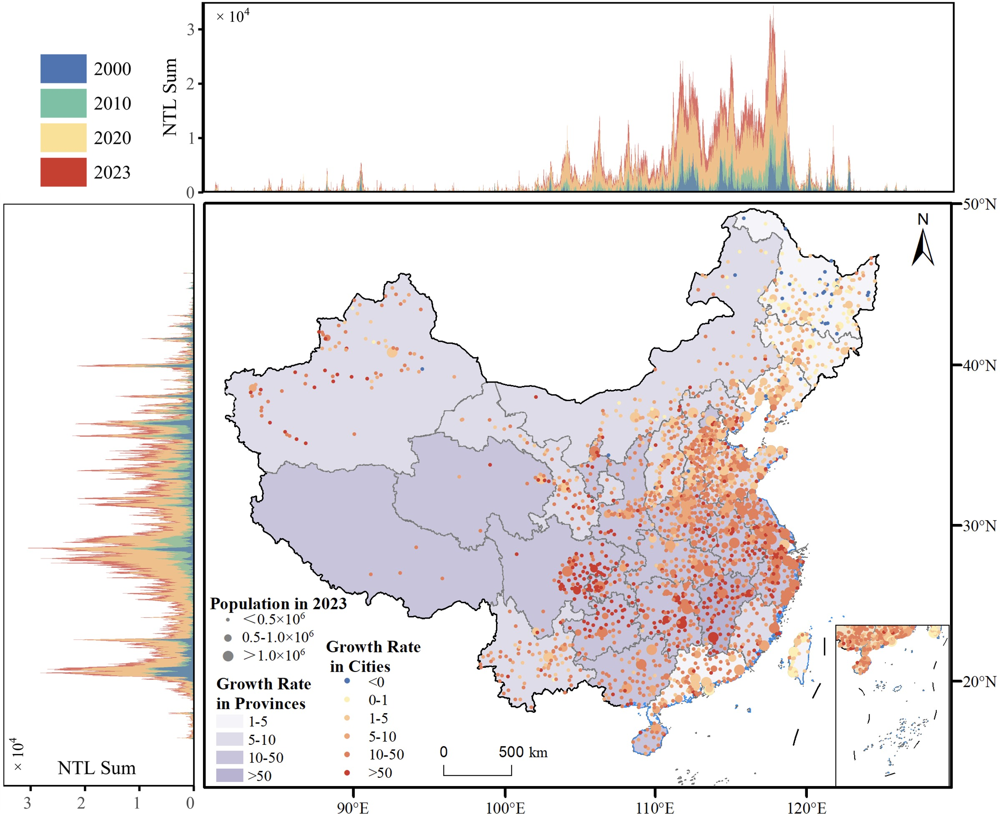
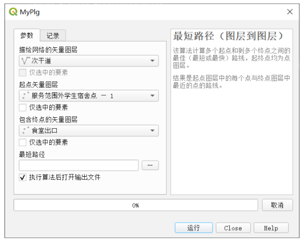
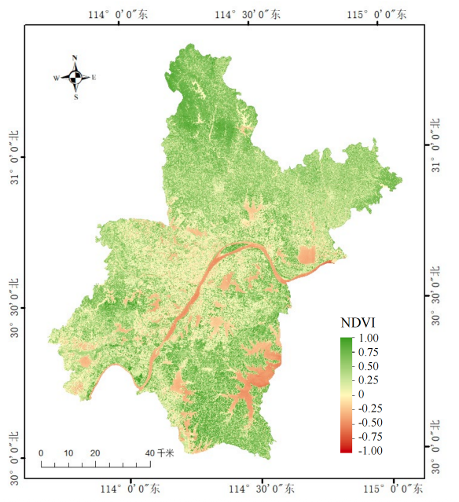
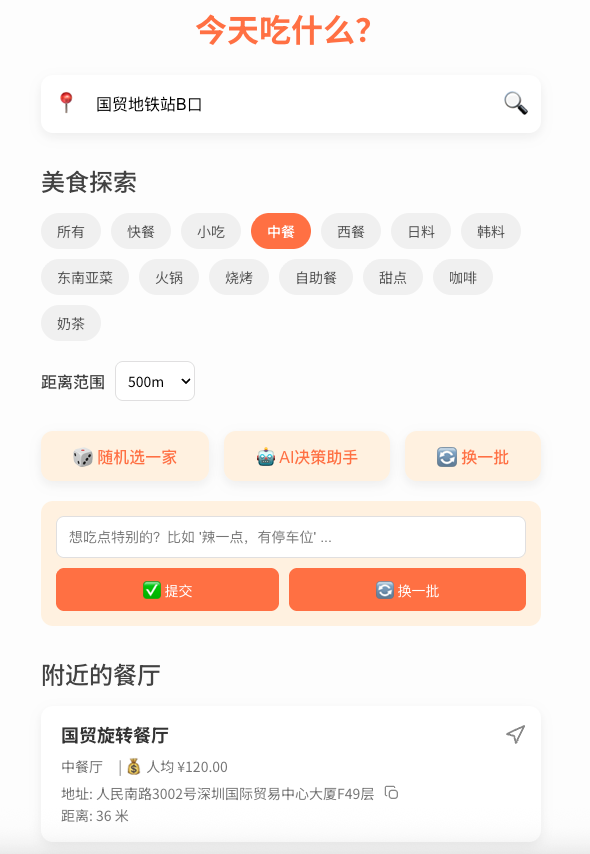

✨ 关于我
基本信息
- 硕士: 香港中文大学
- 学士: 武汉大学
- 专业: 地理信息科学 (GIS)
- 生日: 2003年6月
- 城市: 深圳 / 香港
- 邮箱: xinleixuzz@gmail.com
🚀 Doing now
- 开发「今天吃什么」餐厅推荐工具，通过定位、筛选、随机筛选和AI辅助推荐帮助用户快速选择餐厅
- 准备毕业论文，探索多个城市的CityWalk的空间路径和情感意象
- 寻找深圳/广州/香港的实习/工作机会
✅ Done
- 2025年9月就读于香港中文大学
- 2025年7月-2025年6月于武汉大学资源与环境科学学院担任科研助理
- 2024年6月毕业于武汉大学
- 2023年9月于武汉水利监测站实习
- 2023年7月参加荷兰鹿特丹大学IHS暑期学校
- 2020年9月就读于武汉大学
💼 项目经历
学校项目

城市情感意向模型构建
使用Flickr平台的用户生成数据(UGC)构建北京市城市情感意向特征模型，主要负责使用python爬取Flickr平台的数据和图片的意象提取，并协助景点聚类

基于社区通报数据的武汉市第一轮新冠疫情分析
科研训练项目，主要负责社区地理编码以及后续的风险区域聚类，第三作者

基于夜间灯光数据的中国城市发展及不平等性研究
毕业论文衍生项目，主要负责人，主要完成栅格数据的空间聚合以及夜间灯光基尼系数的计算、人均夜间灯光指标计算以及制图

QGIS插件开发
针对QGIS原生功能仅支持point-to-layer等模式且缺乏批量能力，基于Dijkstra算法构建矢量网络分析流程，实现layer-to-layer批量最短路径分析插件的开发

面向多源遥感影像的无缝植被指数产品生产
科研助理协助项目，参与算法实现、调试、参数检验以及产品生产

基于深度学习的城市功能区识别
硕士期间小组作业，主要负责多源数据的获取(包括地理数据下载以及百度地图POI获取)，协助小组成员完成深度学习部分
个人项目

「今天吃什么」
结合LLM和高德地图API设计并开发app「今天吃什么」
AI翻唱
利用人工智能技术，将一首歌的声音替换为另一位歌手的音色
🛠️ 技能
语言
中文
Native
English
日常会话及听阅能力
粤语
能听懂简单交流
IT能力
Python
R
PostgreSQL
HTML/CSS
C++
机器学习
GIS专业技能
ArcGIS
ENVI
QGIS
Google Earth Engine